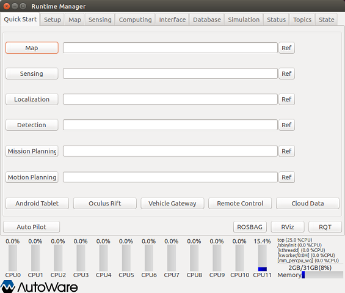
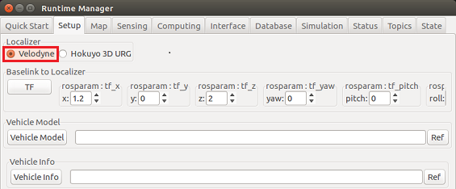
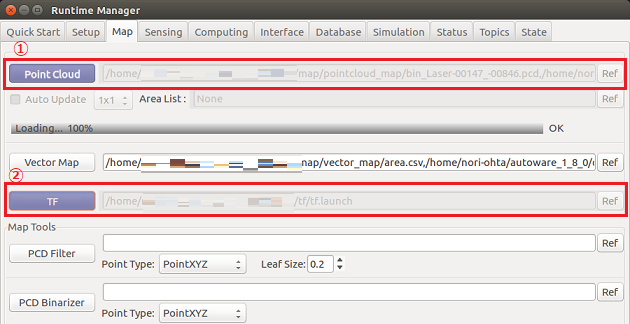
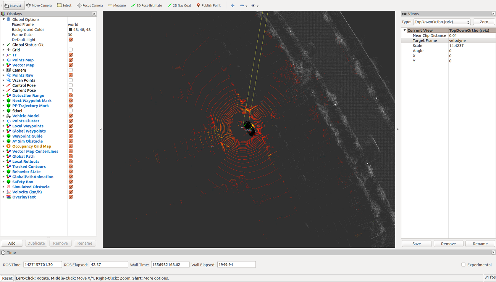
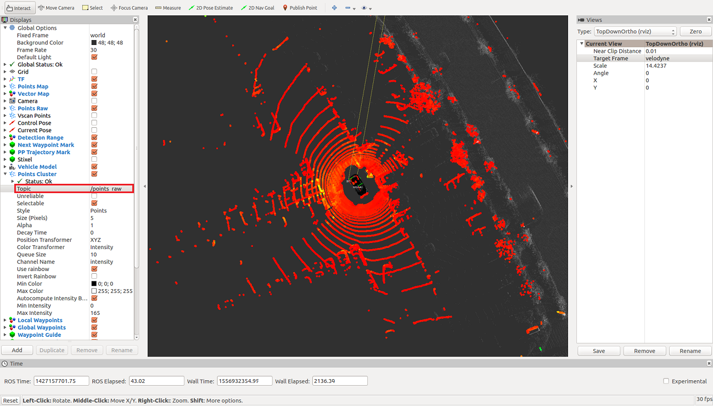

VoxelGridFilter.m の利用例
Contents
- 1. Autoware の起動
- 2. シミュレーションクロックの設定（Runtime Manager の Simulation タブ）
- 3. LiDAR 位置設置と車両モデルのロード（Runtime Manager の Setup タブ）
- 4. 地図データとTFのロード（Runtime Manager の Map タブ）
- 5. 動作確認に必要なノードを起動（Runtime Manager の Computing タブ）
- 6. MATLAB から Autoware（ROS マスター）への接続
- 7. VoxelGridFilter.m の起動
- 8. rosbag の再生（Runtime Manager の Simulation タブ）
- 9. rviz の起動
- 10. フィルタ処理の確認
- 11. 終了処理
1. Autoware の起動
Autoware を実行して ROS マスターを起動します。

Runtime Manager が立ち上がります。

2. シミュレーションクロックの設定（Runtime Manager の Simulation タブ）
Runtime Manager の Simulation タブを開きます。 「Ref」ボタンをクリックして、再生する rosbag ファイルを設定します。

「Play」ボタンをクリックしてrosbag を再生後（下図①）、「Pause」ボタンをクリックし一時停止させます（下図②）。 これによりシミュレーションクロックがオンになります。

3. LiDAR 位置設置と車両モデルのロード（Runtime Manager の Setup タブ）
Runtime Manager の Setup タブを開きます。 Localizer部 で Velodyne を選択します。

Baselink to Localizer 部のパラメータを以下のように設定し、「TF」ボタンをクリックします。

Vehicle Model 部の「Vehicle Model」ボタンをクリックして、車両モデルをロードします。 ファイル選択部を空欄にしておくことで、デフォルトの車両モデルがロードされます。

4. 地図データとTFのロード（Runtime Manager の Map タブ）
Runtime Manager の Map タブを開きます。
- 「Point Cloud」ボタンの右側の「Ref」ボタンをクリックして、自己位置推定に使用する pcd ファイルを全て選択し、 「Point Cloud」ボタンをクリックします。
- 「TF」ボタンの右側「Ref」ボタンをクリックして、pcd データに対応する TF 情報が設定された launch ファイルを選択し、 「TF」ボタンをクリックします。

5. 動作確認に必要なノードを起動（Runtime Manager の Computing タブ）
Runtime Manager の Computing タブを開きます。 nmea2tfpose の app をクリックして設定画面を開き、Plane number を「7」に設定後、「OK」ボタンをクリックします。

ndt_matching の app をクリックして設定画面を開き、「GNSS」を選択後、「OK」ボタンをクリックします。

nmea2tfpose と ndt_matching のチェックボックスにチェックを入れます。

6. MATLAB から Autoware（ROS マスター）への接続
MATLAB で rosinit コマンドを使用して ROS マスターに接続します。
rosinit('http://169.254.66.185:11311');
7. VoxelGridFilter.m の起動
VoxelGridFilter.m クラスファイルがあるフォルダを MATLAB 検索パスに登録後、 VoxelGridFilter のインスタンスを生成し、フィルタ処理を実行します。
voxel_grid_filter_folder = fullfile(autoware.getRootDirectory(), ... 'benchmark', 'sensing', 'filters', 'points_downsampler', ... 'voxel_grid_filter'); addpath(voxel_grid_filter_folder); voxel_grid_filter_obj = VoxelGridFilter();
8. rosbag の再生（Runtime Manager の Simulation タブ）
「Pause」ボタンをクリックして、rosbag を再生します。

9. rviz の起動
Runtime Manager の RViz ボタンをクリックして rviz を起動します。

rviz が起動したら、メニューの［File］-［Open Config］から「Autoware/ros/src/.config/rviz/default.rviz」を選択します。 Runtime Manager でロードしたデータと rosbag のデータが表示されます。

10. フィルタ処理の確認
rviz の Points Cluster の Topic を「/points_raw」に設定し、フィルタ処理前の点群を確認します。

次に、Points Cluster の Topic を「/filtered_points」に設定変更し、フィルタ処理後の点群を確認します。

ダウンサンプリングされていることが確認できます。
本例実行時のノードグラフ画像を確認するには ここ を、 SVGファイルを確認するには ここ をクリックしてください。 VoxelGridFilter.m で生成されるノードは /voxel_grid_filter_ml です。
{kind=link}
{kind=link}
11. 終了処理
下記のコマンドを実行して終了します。
voxel_grid_filter_obj.delete(); rosshutdown(); rmpath(voxel_grid_filter_folder); clear voxel_grid_filter_obj voxel_grid_filter_folder;